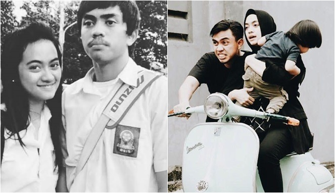

Ayudia dan Ditto Percussion
April 3 2018, Love Story Kalau ada kisah paling manis sahabat jadi cinta yang menjadi kenyataan dan berakhir happy ending, maka itu adalah kisah cinta Ayudia Bing Slamet dan Muhammad Pradana Budiarto (Ditto). Sebelum menjadi pasangan suami-istri, keduanya sudah berteman kurang lebih 15 tahun, dari duduk di bangku SMP Kisah cinta mereka sukses mematahkan anggapan bahwa friendzone selalu berakhir dengan tak bahagia. Atau mungkin ‘nembak’ sahabat yang sering merusak persahabatan itu sendiri. Kalau kata Ditto, tembaklah di waktu yang tepat dan jangan hanya dijadikan pacar. Sekarang dijadikan relationship goals, kira-kira beginilah perjalanan cinta mereka.